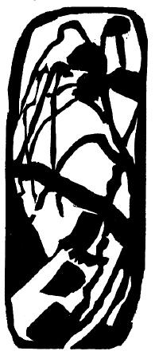
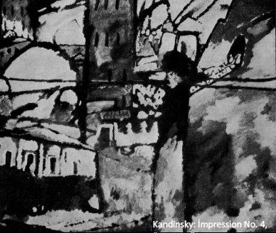
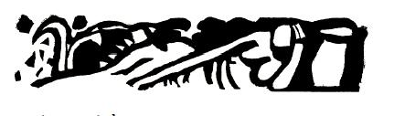

Teori

Çağdaş armoninin doğasından dolayı, tam bir teori[59] geliştirmek ya da sıkı bir sanatsal zemin kurmak bugün daha önce olmadığı kadar güçtür. Böylesi girişimler Leonardonun küçük kaşıklar sistemindeki gibi bir sonuca varır. Ancak resimde temel ilkeler ya da sağlam kurallar olmadığını ve onları aramanın kaçınılmaz bir biçimde akademizme yol açacağını söylemek de acelecilik olur. Müziğin bile, zaman zaman değişmesine rağmen, bir tür sözlük gibi her zaman yararlı ve değerli olan bir grameri vardır.
Fakat resim farklı bir konumdadır. Doğaya bağlılığa karşı olan isyan henüz başlıyor. Rengin ve formun içsel etkinliği bugüne dek bilinçsizce değerlendirildi. Kompozisyonun geometrik bir forma tabi tutulması yeni bir fikir değil (örneğin, İran sanatı). Tamamıyla soyut bir temel üzerine yapı kurmak yavaş ilerleyen bir iştir ve başta rastgele ve amaçsız gözükür. Sanatçı gözünün yanı sıra ruhunu da eğitmelidir, böylece renkleri yalnızca dışsal izlenimlere göre değil kendi başlarına da tahlil edebilir.
Bizi doğaya bağlayan bağları aceleyle koparmaya başlar ve saf rengin soyut formla birleşiminden başka şey görmez olursak, yalnızca süsleme niteliği taşıyan ve boyun bağlarına ya da halılara yaraşır eserler üretiriz. Güzel form ve güzel renk, estetikçilerin ya da akıllarını güzellik fikrine takmış natüralistlerin iddialarının aksine, kendi başına yeterli bir amaç değildir. Resmimizin henüz başlangıç safhasında olmasından dolayı, hakiki renk ve form kompozisyonunun içsel armonisini pek az yakalayabiliyoruz. Titreşimler elbette sinirlere ulaşıyor, ancak daha öteye gidemiyorlar, çünkü ruhta yarattıkları etki çok zayıf. Ama ruhsal deneyimin hız kazandığını, insan düşüncesinin en sağlam temeli olarak görülen pozitif bilimlerin sendelediğini ve maddenin yakında gözden uzaklaşacağını düşününce, saf kompozisyon devrinin yakında geleceğine dair umutlanıyoruz.
Süslemenin cansız olduğu düşünülmemeli. Onun da içsel bir yaşamı var; fakat bu, ya eski süsleme sanatı örneklerinde olduğu gibi bize bir şey ifade etmiyor, ya da yetişkinlerle ceninlerin eşit roller oynadığı, kol ve bacaklardan yoksun varlıkların bulunduğu, burunlarla ayak parmaklarının kendi başlarına dolaştıkları bir dünya gibi mantıkdışı bir karmaşayı andırıyor. Aynı kaleideskobun yarattığı farklı dünya gibi. Süsleme sanatı bizi yine de etkiliyor; örneğin Doğu süslemelerinin vahşilerinkinden ya da eski Yunanınkilerden oldukça farklı bir etkisi var Müziğin, parçanın doğasına göre allegro, serioso vs gibi tanımlanması gibi, süsleme örneklerinin de neşeli, ciddi ya da kederli diye tanımlanması boşuna değildir.
Geleneksel süsleme sanatı kaynağını muhtemelen doğadan alıyor. Ancak dış doğanın tüm sanatın tek kaynağı olduğunu öne sürdüğümüz takdirde, desenlerde doğal nesnelerin sanki hiyerogliflermiş gibi sembol olarak kullanıldığını da hatırlamamız gerekir. İçsel armonilerini bu yüzden tartamıyoruz. Örneğin, Çin ejderhalarından oluşan bir desenin yemek ya da yatak odamızda bulunmasından rahatsız olmayabiliriz, papatyalı bir desenden pek ayırmayabiliriz onu.
Şimdiden ölüm döşeğine düşmüş çağımızın sonuna doğru yeni bir süsleme sanatı gelişebilir, ancak bu sanatın geometrik forma dayalı olması pek muhtemel değil. Bu yeni sanatı bugünden tanımlamaya çalışmak, büsbütün açılsın diye goncayı çekiştirmek gibi anlamsız olur. Bugün hâlâ dış doğaya bağlıyız ve ifade araçlarımızı onda bulmamız gerekiyor. Peki, bunu nasıl yapacağız? Başka deyişle, doğanın renklerini ve formlarını değiştirirken ne kadar ileri gidebiliriz?
Sanatçı, duygularını taşıyabildiği noktaya dek gidebilir. Biz de hakiki hislere duyulan ihtiyacın ne kadar büyük olduğunu bir kez daha görürüz. Bunu birkaç örnekle daha anlaşılır kılalım.
Sıcak bir kırmızı tonu, ayrı bir renk ya da soyut bir şey sayılmayıp doğal bir formla birleştirilir ve bir nesnenin bir parçası olarak uygulanırsa, rengin içsel değeri maddi açıdan değişir. Doğal formlardaki çeşitlilik ruhsal değerlerde çeşitlilik yaratır ve tümü, asıl kırmızıyla uyum sağlar. Kırmızıyı gökyüzüyle, çiçeklerle, bir giysiyle, bir yüzle, bir atla, bir ağaçla birleştirdiğimizi varsayalım.
Kırmızı bir gökyüzü, aklımıza gün batımını ya da ateşi getirir ve buna bağlı olarak üstümüzde görkem ya da tehlike etkisi bırakır. Diğer nesnelerin bu kırmızı gökyüzüyle birlikte nasıl kullanıldığı artık iyice önemlidir. Bu kullanım doğaya sadık ve uygunsa, gökyüzünün natüralistik etkisi güçlenir. Ama diğer nesneler çok daha soyut bir biçimde işlendilerse, gökyüzünün natüralistik etkisini yok eder ya da azaltırlar. İnsan yüzünde kırmızı kullanılması da benzer sonuçlara yol açar. Bu durumda kırmızı, modelin tutkulu ya da başka yanlarını vurgulamak için kullanılabilir ve ancak resmin geri kalanının aşırı derecede soyut bir biçimde işlenmesiyle bastırabilecek bir güç kazanabilir.
Kırmızı bir giysi bambaşka bir durum, çünkü giysi gerçekte de herhangi bir renkte olabilir. Ancak burada saf sanatsal gereklilikleri karşılamaya pek uygundur; çünkü yalnızca burada, maddi amaçlarla ilişkisiz bir şekilde kullanılabilir. Sanatçı, yalnızca kırmızı pelerinin değerini değil, pelerinin onu giyen figürle ve figürün tüm resimle olan ilişkisini de düşünmelidir. Resmin kederli bir resim olduğunu düşünün; kederli hava da –merkezi konumundan ya da hatlarından, tavrından, renginden vs. dolayı- kırmızı pelerinli figür üstünde yoğunlaşıyor olsun. Kırmızı, keskin bir duygu uyuşmazlığı yaratarak resmin kederini ön plana çıkaracaktır. Kederli bir rengin kullanılması dramatik bütünün etkisini zayıflatırdı.[60] Bu, daha önce bahsi geçen antitez ilkesidir. Kırmızı, tek başınayken izleyicide keder etkisi bırakmaz. Kederli bir resme katıldığı ve uygun bir şekilde kullanıldığı takdirde ise dramatik bir unsura yol verir.[61]
Kırmızının ağaçta kullanılması da başkadır. Rengin temel değeri değişmez. Ancak bu defa sonbahar çağrışımı devreye girer. Renk bu çağrışımla kolayca birleşir ve kırmızı pelerinde olduğu gibi dramatik bir çatışma olmaz.
Son olarak, kırmızı bir at da başka türlü bir değişikliğe yol açar. “Kırmızı at” demek bile bizi başka bir havaya sokar. Kırmızı bir atın imkânsızlığı bizi gerçekdışı bir dünyaya sürükler. Renk ve formun bu birleşiminin garip bir olay -tamamıyla yüzeysel ve sanat-dışı bir etki- ya da bir peri masalı[62] -yine sanat-dışı bir etki- gibi görünmesi olasıdır. Kırmızı atı natüralist bir peyzaja yerleştirmek öyle bir uyumsuzluk yaratır ki ne o eski tutarlı etki uçup gider. İster geleneksel uyuşmazlığa ister uyuma dayalı olsun, tutarlılık ihtiyacı armoninin esasıdır. Yeni armoni, dışsal form ve rengin varyasyon ve karşıtlıkları ne olursa olsun, resmin içsel değerinin bütünleşmiş olmasını gerektirir. Bu nedenle, yeni sanatın unsurları doğanın dışsal değil içsel özelliklerinde aranmalıdır.
İzleyici, resimde bir anlam, yani farklı bölümler arasında dışsal bir bağlantı aramaya dünden hazır. Materyalist çağımız, karşısında durup resmin kendi mesajını iletmesine razı gelemeyen bir izleyici ya da uzman tipi doğurdu. İzleyici, resmin içsel değerinin işlemesine izin vermek yerine, telaşla doğaya yakınlık, mizaç, işleme tarzı, tonalite, perspektif vs aramaya koyuluyor. İçsel anlama ulaşmak üzere dışsal ifadeyi didiklemiyor. İlginç bir insanla sohbet ederken, onun esas düşünce ve duygularına ulaşmaya çalışırız. Kullandığı kelimelerle, telaffuzuyla, nasıl nefes aldığıyla, dilinin ve dişlerinin hareketleriyle, beynimizdeki psikolojik faaliyetle, kulağımızdaki fiziksel sesle ya da sinirlerimizdeki fizyolojik etkiyle ilgilenmeyiz. İlginç ve önemli olmalarına rağmen o an esas meselenin bunlar olmadığının ve bizi asıl ilgilendirenin anlam ve düşünceler olduğunun farkındayızdır. Bir sanat eseriyle karşı karşıya geldiğimizde de aynı duygu içinde olmalıyız. Bu tavır yaygınlaştıkça sanatçı da tamamıyla sanatsal bir dil konuşabilecek.
Renk ve formun birleşimine dönersek, değinilmesi gereken bir olasılık daha var. Resimdeki doğal-olmayan nesnelerin edebi etkileri olabilir, hatta tüm resim masal gibi gelebilir. İzleyici, olağanüstü olarak kabul ettiği için kendisini rahatsız etmeyen bir ortama sokulmuştur; hikâyenin izini sürmeye çalışır ve renklerden türlü türlü etkilenir. Oysa renklerin içsel bir etki bırakmaları olanaksızdır, dışsal düşünce hâlâ hâkimdir. Çünkü izleyici şimdi de içsel hissin hakikatine yer vermeyen boş bir düşler âlemine gitmiştir.
O halde, masala kaçmayan ve rengin özgür etkinliğini kısıtlamayan bir ifade biçimi bulmamız gerek. Doğadan aldığımız renkler, formlar ve hareket, dışsal etkilere yol açmamalı ve dışsal nesnelerle bağlantılı olmamalı. Doğadan uzaklaşma ne kadar açıksa, içsel anlamın saf olma ve engelle karşılaşmama olasılığı o kadar fazladır.
Bir sanat eseri sadelikten yana olabilir, fakat armoni, dışsal bir nedenle belirlenmemişse ve maddi bir amaç peşinde değilse saftır. En sıradan hareket bile -örneğin ağırlık kaldırma hazırlığı- asıl amacı ortada değilse esrarengiz ve dramatik bir hale bürünür. Öylece durup bir açıklama aklımıza düşene dek büyülenmişçesine izleriz onu. Soyut düşünme zevkini yok eden şey, günlük yaşantımızda esrarengiz bir şeyler olamayacağına duyulan inançtır. Pratik kaygılardan başka bir şey kalmamıştır. Yeni dansın gelişimi bu çizgide, yani hareketin içsel anlamını zaman ve uzam yoluyla ifade etmek yönünde olmuştur. Dansın kaynağı muhtemelen yalnızca cinsellikti. Bu unsuru halk danslarında hâlâ açıkça görüyoruz. Dans dinsel merasim olarak geliştikçe de iki unsur bir araya gelip sanatsal bir form almış ve baleyi meydana getirmiştir.
Günümüzde bale, bu iki kaynağı yüzünden kargaşa içinde. Dışsal amaçları -sevgi ya da korkuyu ifade etmek vs- geleceğin soyut düşünceleri için fazla maddi ve naif. Çağdaş reformcularımız, daha ince ifadeler ararken geçmişten yardım almaya çalıştılar. İsadora Duncan, Yunan dansıyla geleceğin dansı arasında bir bağ kurmuştur. Bu konuda, Primitiflerde esin arayan ressamlara benzer şekilde çalışmaktadır.[63] Resimdeki gibi dans için de bu yalnızca bir geçiş evresidir. Resimde olduğu gibi dansta da, geleceğin sanatının eşiğindeyiz. Her iki durumda da aynı kurallar uygulanmalı. Geleneksel güzellik bir kenara bırakılmalı ve hikâye anlatma ya da kıssa gibi yararsız edebi unsur terk edilmeli. Her iki sanat da, içsel ruhtan doğan her armoni ve uyuşmazlığın güzel olduğunu ve bunların yalnızca içsel ruhtan doğması gerektiğini müzikten öğrenmeli.
Geleceğin dans sanatının başarılı olması, ruhsal armoni sanatının ilk coşmasını, yani hakiki sahne kompozisyonunu mümkün kılacak.
Yeni tiyatronun kompozisyonu üç unsurdan oluşacak:
(1) Müzikal hareket
(2) Resimsel hareket
(3) Fiziksel hareket
Ve bu üçü, uygun bir şekilde birleştirildiği takdirde, ruhsal hareketi meydana getirecek, yani içsel armoni işleyecek. Resmin iki ana unsuru olan form ve renk gibi onlar da armoni ve uyumsuzluk içinde birbirlerine karışacaklar.
Scriabinin sesi ona karşılık gelen bir renkle yoğunlaştırma girişimi tabii yalnızca bir deneme. Gelişkin sahne kompozisyonunda, iki unsur üçüncüyle geliştirilir ve sonsuz birleşim ve bireysel kullanım olanakları açılır. Ayrıca Schönbergin kuartetlerinde denediği gibi, dışsal armoni içsel olanla birleştirilebilir. Bu fikrin nasıl geliştiğini burada daha fazla açıklamak mümkün değil. Okur, daha önce belirtilen resim ilkelerini sahne kompozisyonu sorununa uyarlamalı ve geleceğin tiyatrosunun içsel ihtiyacın sarsılmaz ilkesine uygun olanaklarını kendi başına genel olarak tasarlamalı.
Yeni sanata giden yol, Renk ve form birleşimine dair söylenenler izlenerek bulunabilir. Bu yol bugün iki tehlike arasında. Bir yanda, rengin geometrik forma tamamen keyfi bir biçimde uygulanması, yani salt desen var. Öbür yanda ise, rengin cisim formunda daha natüralistik bir biçimde kullanılması, yani salt fantezi bulunuyor. İki seçenek de abartılı. Her şey sanatçının emrinde ve günümüzün özgürlüğü hem yeni olanaklar hem de tehlikeler getiriyor. Yeni, muazzam bir devrin doğumuna tanıklık edebiliriz[64] ya da bu fırsatın anlamsız bir savurganlıkla boşa harcanışını izleyebiliriz.
Sanatın doğadan üstün olduğu yeni bir keşif değil.[65] Yeni ilkeler gökten düşmez; bir şekilde geçmişe ve geleceğe bağlıdırlar. Bizim için önemli olan, ilkenin o anki durumu ve en iyi nasıl kullanılabileceğidir. İlkeler zorla kullanılmamalı. Sanatçı ruhunu doğru sese göre ayarlarsa, eserinden çıkan sesler de öyle olur. Günümüzdeki özgürleşme, içsel ihtiyacın yolunda ilerlemeli. Bugün, dışsal formlar bu özgürlüğün önünü kesiyor ve kompozisyonun amacı yapı oluyor. Yapısal form arayışı, doğal formun çoğu zaman geometrik yapıya tabi tutulduğu, soyutun somutla engellendiği ve somutun da soyutla bozulduğu bir süreç olan Kübizmi doğurmuştur.
Yeni sanatın armonisi, çok daha ince ve gözden çok ruha hitap eden bir yapı gerektirir. Bu gizli yapı, görünüşte tesadüfî bir form seçimiyle meydana gelebilir. İçsel armoni, dışsal birlikten yoksun oluşta yatar. Formların böyle gelişigüzel düzenlenmesi sanatsal armoninin geleceği olabilir. Aralarındaki temel ilişki nihayet matematiksel olarak gösterilebilecek, ama düzenli değil düzensiz ifadelerle ortaya konulacak.

